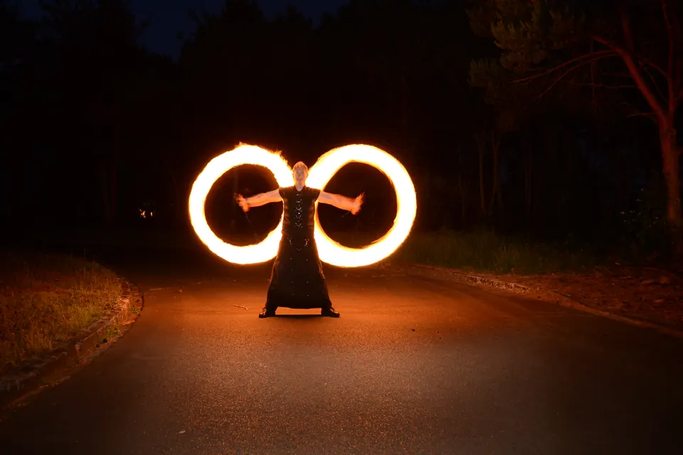

Projekt 1024 · Stephan Reuvekamp · Lienen, NRW
Von der Zeichnung
zum Objekt.
Konstruktion, Visualisierung und Bau aus einer Hand: für Hersteller, Marken, Veranstalter und Einrichtungen. Ein Ansprechpartner von der ersten Skizze bis zum fertigen Objekt.
01 Drei Säulen
Projekt 1024 entwickelt, konstruiert und baut. Wer eine Idee mitbringt, bekommt ein durchgerechnetes Modell, ein überzeugendes Bild und am Ende ein Objekt, das steht.

02 Sparten
Sechs Sparten, ein Farbcode.
Jede Sparte hat ihre eigene Farbwelt nach der 60-30-10-Regel. Schrift, Raster und Haltung bleiben gleich, damit alles als eine Marke erkennbar ist.

Konstruktion & Visualisierung
Fertigungsgerechte 3D-Modelle, Renderings und Animationen.
- CAD
- Rendering
- Produktanimation
- AR/VR

Prototyping & Modellbau
Vom Modell zum greifbaren Prototyp, Exponat oder Kleinserienteil.
- Prototypen
- 3D-Druck
- Modellbau
- Merchandise

Endless on Fire
Feuershows, Stunt und Pyrotechnik, mit selbst gebauten Requisiten.
- Feuershows
- Custom-Shop
- Pyrotechnik
Kognitive Architektur & Coaching
Kognitive Architektur, Neurodiversität, Legasthenie: Coaching für Neurodivergenz in Betrieben, Organisationen und auf Großveranstaltungen.
- Neurodiversität
- Legasthenie
- Workshops
 KI-Visualisierung
KI-VisualisierungUniverselle Skaleninvarianz
Forschung zur fluiden Feldmechanik: Buch, Arbeiten, Modelle.
- Buch
- Arbeiten
- Downloads
 KI-Visualisierung
KI-VisualisierungDas Manifest der Endlichkeit
Eine Hard-Sci-Fi-Saga in acht Bänden, von der Erde bis Milkomeda.
- 8 Bände
- 4 Ären
03 Arbeitsweise
Zeichnung, Geometrie, Objekt.
Jedes Projekt durchläuft dieselben drei Schritte, egal in welcher Sparte. Das macht Entscheidungen früh sichtbar und spart Schleifen in der Fertigung.

Zeichnung
Schritt 01Idee, Anforderungen und Maße landen zuerst auf Papier. Hier wird entschieden, was das Objekt können muss.

Geometrie
Schritt 02Aus der Skizze wird ein parametrisches 3D-Modell: prüfbar, änderbar, bereit für Zeichnung, Rendering und Fertigung.

Objekt
Schritt 03Prototyp, Exponat oder Serienteil. Was gebaut wird, wurde vorher gezeichnet und gerechnet.


05 Qualifikationen
Belegt, nicht behauptet.
Abschlüsse und Zertifikate aus Technik, Qualität und Bühne. Der vollständige Werdegang steht in der Vita.
Anfrage
Erzählen Sie mir von Ihrem Vorhaben.
- Was soll entstehen, und wofür?
- Vorhandene Skizzen, Fotos oder CAD-Daten
- Termin, Ort und Stückzahl, falls bekannt